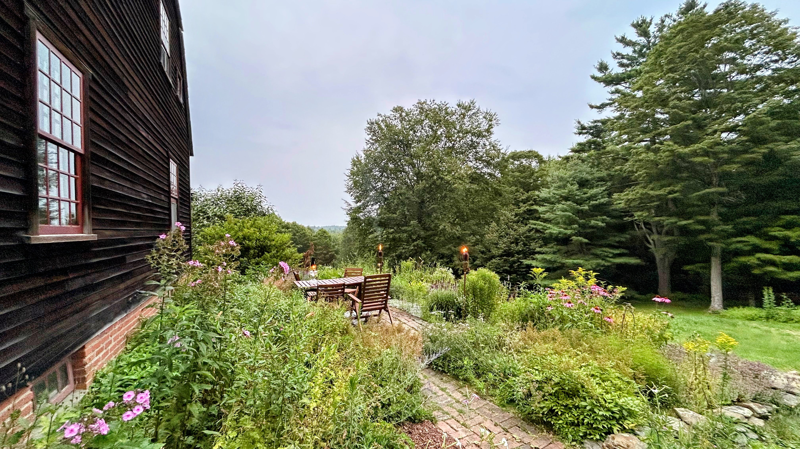

Curated Experiences
Rest. Wander. Restore.
Every offering at SYS is designed around one idea: that when you give a person quiet time in the forest, something in them begins to heal.
Every offering at SYS is designed around one idea: that when you give a person quiet time in the forest, something in them begins to heal.
Unlike conventional wellness retreats, SYS is intentionally simple. No schedules unless you want them, no performances, no pressure. Each experience is an invitation — not an obligation.

Your home in the forest. Rest in a thoughtfully furnished space where every detail — the materials, the light, the sounds outside your window — reminds you that you are part of something living.
Accommodations range from a private woodland cabin to a light-filled guesthouse suite. All feature natural materials, handmade furnishings, and direct access to the trail network.

Our signature offering. Led by a certified Shinrin-Yoku guide, this two-to-three hour slow walk through the forest is not exercise — it is a practice. You will be invited to pause, to notice, to breathe, and to let the forest meet you.
Guided walks follow a gentle, unhurried route through the property's most immersive forest sections. Sessions close with a shared tea ceremony using plants foraged from the land.

Guided mindfulness and breathwork sessions held entirely outdoors, in clearing spaces and forest groves chosen for their natural resonance. Sessions are grounded in MBSR (Mindfulness-Based Stress Reduction) and adapted for the forest environment.
Available as standalone morning sessions or as part of a longer stay package. Perfect for those new to meditation and for experienced practitioners alike.

For groups seeking something more intentional — a team offsite, a wellness retreat for a small group, a couples' renewal, or a solo deep-dive — we design fully custom multi-day experiences around your needs and the season.
Private retreats include exclusive use of portions of the property, personalized programming, and support from our full guide team. Contact us to begin the conversation.
Not sure where to start? Our packages make it easy.
A full day of guided immersion — no overnight stay required.
The full SYS experience — arrive Friday, leave renewed on Sunday.
For those who need more than a weekend. A true forest immersion.
Not at all. Shinrin-Yoku walks are intentionally slow and unhurried — the opposite of a hike. We move at the pace of the forest, not a fitness goal. The trails we use are gentle and suitable for most mobility levels. Please let us know about any specific needs when you book.
Every season at SYS offers something irreplaceable. Spring brings wildflowers and birdsong; summer, a deep green canopy and warm evening air; autumn, the legendary Berkshire foliage; winter, the rare hush of snow-covered woodland. We are genuinely a four-season sanctuary and recommend visiting in the season that calls to you most.
SYS is designed as a quiet, contemplative space and is best suited for adults and older teenagers. Children are welcome on stays (ages 12+), but some guided experiences are adults-only. We're happy to discuss your family's needs — just reach out before booking.
We love animals, but to preserve the wildlife habitat and the meditative atmosphere of the sanctuary, we ask that guests do not bring pets. We appreciate your understanding.
We recommend booking 4–8 weeks in advance, especially for weekend stays and autumn visits. For private retreat inquiries, please reach out at least 8–12 weeks ahead so we can design the experience properly.
We offer limited Wi-Fi in accommodations for emergencies and essential use. We gently encourage guests to treat SYS as a digital-light space — not a rule, but an invitation. The forest works better when you're fully in it.
Reach out to ask a question, customize an experience, or simply tell us what you're looking for. We'll find the right path together.
Get in Touch